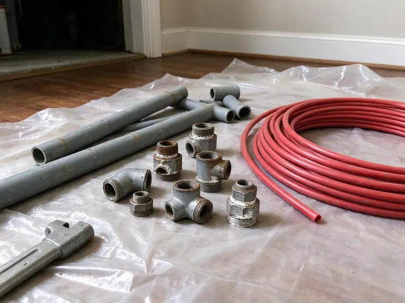

Water Heater Replacement in Lorain, OH
Bradford White, Rheem and AO Smith tanks, installed in Lorain, OH with fresh connections and a working relief valve.
- All Fuel Types
- Same-Day Replacement
- Permit Handled
- Common Sizes Stocked
Water Heater Replacements by HRL Plumbing in Lorain, OH
Tell us the gallons and fuel on the label and we can give you a price by phone.
Tank and Tankless Replacements in Lorain, OH
HRL Plumbing matches the new heater to your household in Lorain, OH, not just to the label on the old one. If the family has grown or a new bathroom went in, the old tank size may be the reason you run out of hot water halfway through the second shower. First-hour rating matters most. That number tells you how much hot water a tank can deliver in a busy hour, which is a better guide than gallons alone.
Our expertise includes:
- Haul-away of the old tank
- Venting, gas connector and relief valve drain line upgrades
- Upsizing for growing households

Additional Plumbing Replacement Services in Lorain, OH
When repairs are no longer enough, our replacement services in Lorain, OH deliver modern, efficient equipment installed right.


Customers
Why Choose HRL Plumbing for Water Heater Replacement in Lorain, OH?
Our plumbers install water heaters to Ohio plumbing code and the maker's manual, and the two do not always say the same thing. Code might allow a certain vent connector length, while the manufacturer wants a shorter run with fewer elbows, and following the stricter of the two is what keeps the warranty in force. We follow both.
- Safe Installs, We test each relief valve and each gas joint checked for leaks.
- Same-Day Service, Common tanks on the truck for same-day swaps.
- Efficient Models, Newer tanks carry more insulation and lose less heat.
Citywide Coverage
Distance in Lorain does not change the price. We schedule estimates by area to keep drive time down, which is part of why we can often reach a failed water heater the same day you call. Ask for a time window.
Experienced Team
Our plumbers know how to get heavy tanks in and out of tight spots, from attic scuttles to basement stairs. They plan the path before lifting, protect walls and floors along the way, and use a dolly or a second set of hands for anything over 40 gallons, since a full-size tank can weigh over 100 pounds empty. No dented walls.
Safety-First Approach
Our crews follow Ohio plumbing code on all water heater work, plus the maker's installation manual. Code is the floor, and makers add rules on clearances, venting and water quality, so we follow both to keep it safe and covered. We meet both.
Trusted Certified Lorain Plumbing Services Professionals
At HRL Plumbing, we are proud to offer certified plumbing services throughout Lorain, OH. Credentials matter in this trade. Every repair, install and maintenance visit follows strict safety and quality rules, and the plumbers doing the work carry recognized industry credentials.
Call Us Now PHCC Plumbing Contractor Recognition
PHCC Plumbing Contractor Recognition Better Business Bureau (BBB) Accreditation
Better Business Bureau (BBB) Accreditation Angi Certified Pro
Angi Certified Pro ISO 9001 Quality Management Certification
ISO 9001 Quality Management CertificationWater Heater Jobs We Handle in Lorain, OH
Bradford White Water Heater Services in Lorain
We use Bradford White often on our jobs because the tanks hold up and the parts are easy to find. When we replace one, we match the fuel, size and venting, check whether the old warranty might still cover the tank, and register the new unit so the warranty is on file from day one. We file the warranty.

Commercial Water Heater Replacement in Lorain
Businesses in Lorain put far more hours on a heater than a house, so commercial replacements need more capacity and faster recovery. Restaurants, salons and offices all draw differently, so we size by peak gallons per hour and required temperature, which may mean a larger tank, a booster or a tankless rack. Downtime costs money.
Attic Water Heater Replacement in Lorain
Ohio has a lot of older housing, and many homes still have galvanized supply pipe and cast iron drains that are wearing out. Attic water heaters are harder to swap than ones in a garage or closet. Moving a 50-gallon tank through a pull-down ladder or small opening takes two people, and code wants a pan with a drain line, a platform and a light. We bring the help.
Bradford White, Rheem and AO Smith in Lorain, OH
We install Bradford White, Rheem and AO Smith on most tank jobs. Bradford White is trade-only and durable, Rheem offers range and parts, and AO Smith brings plenty of sizes, so the pick comes down to fit, warranty and stock. Any of the three works.
Emergency Water Heater Replacement in Lorain, OH
A leaking tank can put 40 or 50 gallons on the floor faster than most people expect. Close the cold supply on top, turn off the gas or breaker, open a hot faucet to relieve pressure, and we will aim to have a plumber and tank there the same day. Do not wait it out.
Tankless Water Heater Upgrades in Lorain
Going tankless when the old tank fails is a popular move, but it is a bigger job than a tank swap. Since tankless can pull four times the gas of a tank, the meter line usually gets bigger, and the old vent is swapped for stainless or PVC. You see both numbers.
Water Heater Replacement Cost Comparison in Lorain, OH
A standard tank replacement costs the least up front in Lorain, OH. Tankless and hybrid heat pump models cost more to buy and install but can cut operating costs over the life of the unit, and tankless units often last 15 to 20 years compared to roughly 8 to 12 for a typical tank. We price all three.

Hybrid Water Heater Installation in Lorain, OH
Hybrid heat pump water heaters pull heat from the air around them, using a fraction of the electricity a standard electric tank uses. They need room and airflow, about 700 cubic feet or a louvered door, plus a condensate drain, and they do best in a garage or basement that stays above freezing. They also cool the room.
Water Heater Replacement Near You in Lorain, OH
Being close by lets us move fast when a tank fails. A heater leaking into the garage at night, a pilot that will not stay lit or an electric tank with no hot water after a storm are calls we can often reach the same day, and many are finished before dinner. Trucks carry common tanks.
Our plumbers know the permit routine in Lorain, OH, which keeps replacements simple. Most heater swaps need a permit and an inspection of venting, relief line and gas, so we file before starting and book the inspector for you. That avoids delays.
HRL Plumbing at a Glance
- Fully licensed plumbing team covering Lorain, OH
- 24/7 emergency service with same-day scheduling
- Upfront, flat-rate pricing before work begins
- 4.9-star rated by 673+ Ohio customers
Lorain Map
Lorain Information
- Population
- 65,337
- Area codes
- 440/216/330
- Service area
- Lorain and communities within 40 miles
- Nearby
- Elyria, Lakewood, Parma, Cleveland
A tank usually runs 8 to 12 years, and the install, the venting and the water quality decide whether it reaches the top of that range.
Talk to a Plumber
Call HRL Plumbing for reliable plumbing work done by licensed pros in Lorain, OH.
Our Specialized Plumbing Services in Lorain, OH
At HRL Plumbing, we handle the full list of plumbing services across Lorain, OH. From leak detection to full system installs, our team works fast and charges fair prices on homes and commercial properties alike. Explore our core services below:


From Old Tank to Hot Shower, Replacements Done in Lorain, OH
Old tank out, new tank in, everything tested. Here is the order.
Call for a Quote
Call (740) 449-7505 and describe the problem. We set a visit at a time that works.
Assessment
A plumber checks the heater, venting and connections in your Lorain home. You get a written price before we start.
Replacement
We drain and remove the old tank and install the new one. Code upgrades go in at the same time.
Frequently Asked Questions About Water Heater Replacement in Lorain
Most replacements run between $1,200 and $3,500, depending on the type of unit. Gas or electric, tank size, venting changes, code upgrades like an expansion tank or drain pan, and whether the heater sits in a garage or an attic are what move a job from the low end to the high end. We price it after a visit.
The maker usually covers the tank and parts for 6 to 12 years. Our workmanship is covered separately.
Most tanks carry 6 to 12 years from the maker on the tank and parts. HRL Plumbing adds its own labor warranty on the install.
Not usually, since it involves gas or electrical work, venting and code. A licensed plumber keeps it safe and keeps the warranty valid.
Three to five hours on a standard swap. Tankless conversions or jobs that need new gas piping, venting changes or a relocation can take most of a day.
Tank heaters commonly run 8 to 12 years, and sediment can shorten that. Much of Ohio has hard water, which leaves scale in water heaters, clogs aerators and cuts the life of appliances. Flushing once a year and checking the anode rod every few years can help a tank reach the high end of that range.
Usually, on common sizes. Most replacements take two to four hours, though big plumbing, venting or gas line changes can stretch it longer.
Two to four hours for most swaps. Attic jobs and moves add time.
What Our Customers Say About Our Plumbing Experts

Lisa C.
Water was pouring out from under the washing machine on a holiday weekend. HRL Plumbing talked me through closing the valves over the phone and had a plumber at the house within ninety minutes. It was a burst fill hose.
Emergency Plumbing · Parma, OHEmily R.
The shutoff valve under our kitchen sink snapped off in my hand on a Sunday morning. HRL Plumbing had someone out by early afternoon. He replaced both angle stops with quarter turn valves and showed me where our main shutoff was, which I honestly did not know.
Plumbing Repair · Parma, OH
Daniel K.
A pipe burst in the garage ceiling at 11 at night. Someone answered on the second ring, and the plumber was in my driveway about fifty minutes later. He shut off the main, cut out the split section, and had water back on before 2 am.
Emergency Plumbing · Lorain, OH
Sofia M.
Two new toilets went in during one visit. The tech set them on new wax rings and swapped the old supply lines. He also noticed our bathroom faucet dripping and replaced the cartridge while he was there. No mess left behind.
Toilet Installation · Lakewood, OH
James P.
Our restaurant had a slow leak at the hand sink that was rotting the cabinet base. HRL Plumbing came in at six in the morning before prep, replaced the trap and both supply lines, and was packed up before my first cook clocked in.
Commercial Plumbing · Cleveland, OH
Paul B.
Our pit pump ran nonstop even in dry weather. The plumber found the check valve was stuck open, so the same water kept cycling back into the pit. New valve, new float switch, done in an hour. It runs quiet now.
Sump Pump · Lakewood, OH